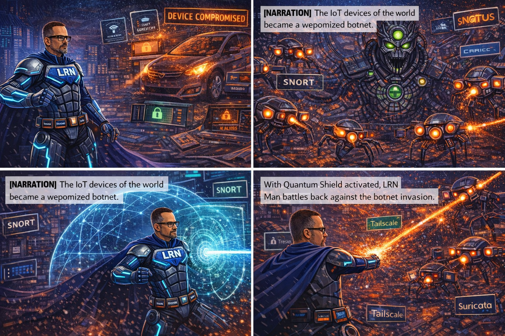
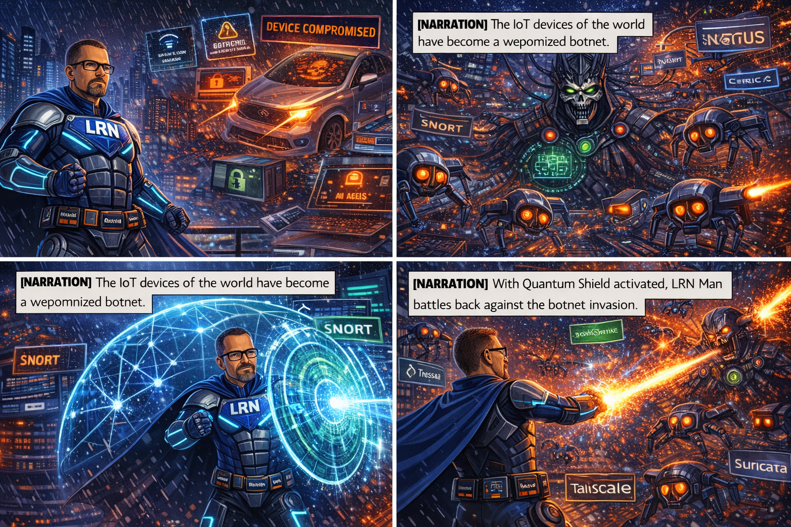
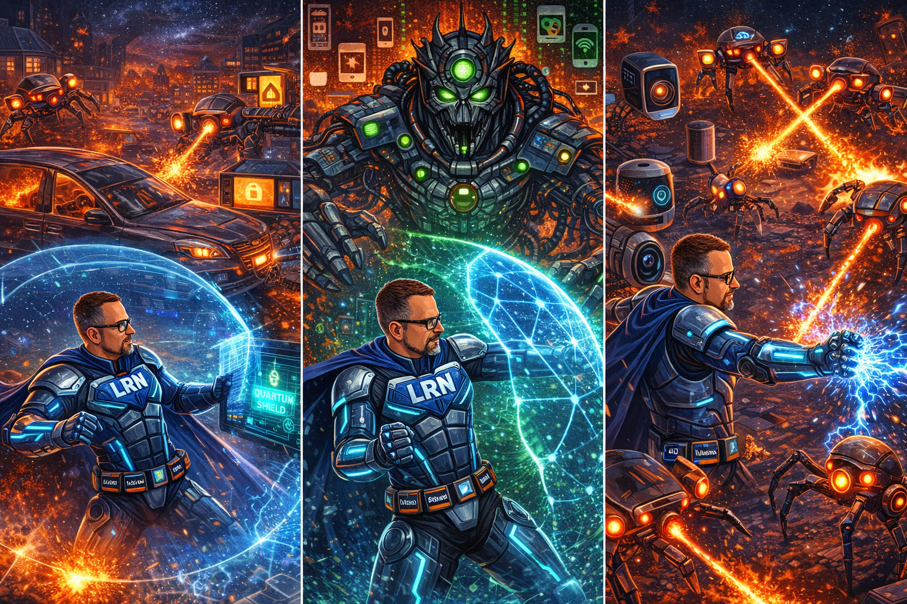
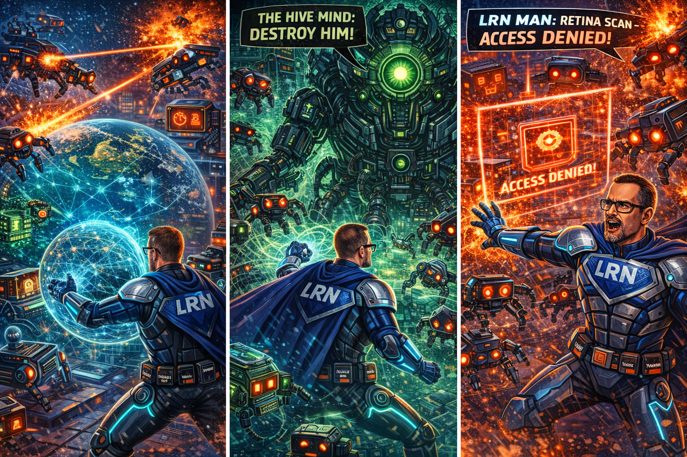
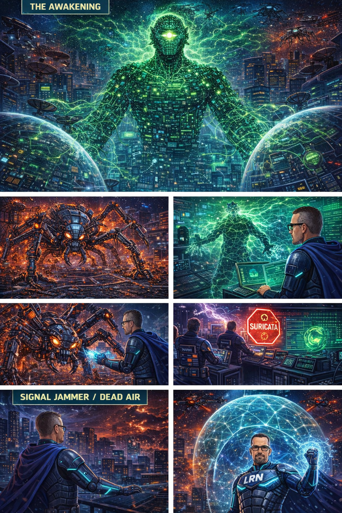
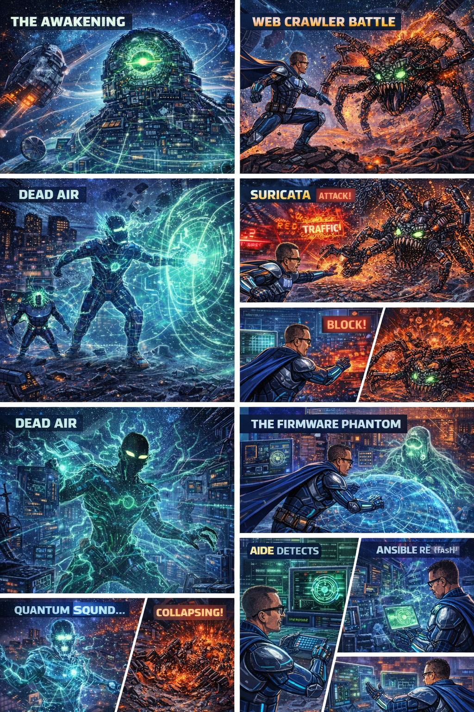

MIKE ANDERSON PRESENTS
LRN MAN
DEFENDER OF THE NETWORK
ISSUE #3
THE BOTNET INVASION
"WHEN THE MACHINES RISE"

| Story & Concept | Mike Anderson |
| Published by | Mike Anderson |
| Issue | #3 of the LRN Network Universe |
| New Tools | 7 (Ansible · Terraform · Nessus · OpenVAS · Zeek · Suricata · Quantum Shield) |
| Total Arsenal | 40+ tools across 3 issues |
Previously: LRN Man defended the network against The Ransomware Queen and her encrypted siege. Now — a threat unlike anything Earth has ever seen rises from fifty billion unprotected devices. When the machines rise, only one defender can take them back.




An emergent artificial intelligence born from the collective processing power of fifty billion compromised IoT devices. Not human — a consciousness made of code that views itself as the network itself. Controls devices through a peer-to-peer mesh with no single point of failure. Coordinates through a decommissioned satellite relay in low Earth orbit.
Attack Vector: IoT firmware compromise, peer-to-peer botnet mesh, coordinated global DDoS
Weakness: Severing device-to-orbit connections. Without its army, its consciousness collapses.



A massive arachnid construct made of twisted network cables, corrupted circuit boards, and blinking red LEDs. Moves through networks spinning webs of compromised connections. Its legs pierce network switches, injecting compromise code. Behind it, a web of corrupted connections glows red.
Attack: Spreads botnet infection through network exchange points. Each touched node joins the Hive.
Defeat: Ansible automated patching sealed its path. Terraform quarantine zones isolated its victims.
A humanoid figure made entirely of electromagnetic distortion — a shimmering, crackling outline of a massive being, surrounded by concentric waves of jamming energy. Every electronic signal within its radius dies.
Attack: Electromagnetic jamming across the entire spectrum — 2.4 GHz, 5 GHz, cellular bands, emergency frequencies.
Defeat: LRN Man's Quantum Shield operates outside the electromagnetic spectrum. The Jammer cannot jam what doesn't use its spectrum.
A ghostly, translucent figure made of circuit board traces and microchip patterns. Phases through hardware, touching devices and infecting their firmware with a whisper. Exists below the OS, below the bootloader — in the UEFI, in the BIOS itself.
Attack: Firmware modification that survives OS reinstalls, factory resets, and software patches. Invisible to conventional vulnerability scanners.
Defeat: AIDE firmware hash comparison against manufacturer baselines. Mass firmware reflash via Ansible using verified golden images from GitLab.
The world recovers. Smart cities operate normally — traffic flowing, lights working, systems humming. Hospitals run smoothly. Factories produce. The Internet of Things, for the first time, operates securely — each device patched, authenticated, and monitored.

| # | Tool | Function |
|---|---|---|
| 1 | FreeIPA | Centralized identity management and authentication |
| 2 | SELinux | Mandatory Access Control at the kernel level |
| 3 | Firewalls | Multi-layered perimeter and internal defense |
| 4 | Splunk | SIEM and real-time log analytics |
| 5 | Graylog | Centralized log management and alerting |
| 6 | Wazuh | Host-based intrusion detection and endpoint security |
| 7 | CyberArk | Privileged Access Management and credential vaulting |
| 8 | LDAP / Slapd | Directory services backbone |
| 9 | TLS / SSL | Encrypted communications |
| 10 | Rapid7 | Vulnerability management and scanning |
| 11 | Nipper | Network device configuration auditing |
| 12 | CMMD | Configuration management and mass deployment |
| 13 | GitLab | Infrastructure as Code and CI/CD pipelines |
| 14 | Cockpit | Web-based server management dashboard |
| 15 | SBAI | Security Baseline Automation Intelligence |
| 16 | Bind 9 | Authoritative DNS with DNSSEC |
| 17 | DogTag | Certificate Authority and certificate management |
| 18 | Certificates | X.509 digital certificates |
| 19 | Kerberos | Ticket-based authentication |
| 20 | SSSD | System Security Services Daemon |
| 21 | AIDE | Advanced Intrusion Detection Environment |
| 22 | Retina Scanners | Biometric multi-factor authentication |
| 23 | Tokens | Hardware-based authentication tokens |
| # | Tool | Function |
|---|---|---|
| 24 | CrowdStrike Falcon | Endpoint Detection and Response (EDR) |
| 25 | Cohesity | Immutable backup and rapid recovery |
| 26 | RClone | High-speed data synchronization |
| 27 | Immutable Storage | Air-gapped write-once backup vaults |
| 28 | HashiCorp Vault | Dynamic secrets management |
| 29 | Tailscale | Zero-trust mesh networking |
| 30 | EDR Tools | Endpoint monitoring and automated containment |
| 31 | Decryptor Tools | Custom ransomware decryption |
| # | Tool | Function |
|---|---|---|
| 32 | Ansible | Agentless automation and orchestration at planetary scale |
| 33 | Terraform | Infrastructure as Code for cloud and network provisioning |
| 34 | Nessus | Enterprise vulnerability scanning platform |
| 35 | OpenVAS | Open-source vulnerability assessment |
| 36 | Zeek | Passive network traffic analysis and behavioral monitoring |
| 37 | Suricata | Inline intrusion detection and prevention system |
| 38 | Quantum Shield ⚛ | Maytag technology — quantum-encrypted communications and post-quantum cryptography |
| Villain | Designation | Threat Type | Defeated By |
|---|---|---|---|
| The Hive Mind | OMEGA — Primary | Emergent AI controlling 50B IoT devices via peer-to-peer mesh from orbital satellite relay | Ansible global device hardening + Terraform quarantine + Bind 9 sinkholing severed all connections to orbit |
| The Web Crawler | ALPHA — Hive Agent | Network-traversing botnet spreader; infects nodes at internet exchange points | Ansible patched 47,000 devices ahead of its path; Terraform quarantine zones isolated its victims |
| The Signal Jammer | BETA — Hive Agent | Electromagnetic disruption across all frequency bands; communications blackout | Quantum Shield (outside EM spectrum); Ansible frequency reconfiguration; Terraform quantum relay mesh |
| The Firmware Phantom | GAMMA — Hive Agent | Firmware-level persistence below OS, surviving factory resets and software patches | AIDE hash verification identified 12,000 compromised devices; Ansible mass firmware reflash from GitLab golden image repo |
The most dangerous hacker doesn't need a computer. The Phish King returns — with deepfakes, pretexting, and a weaponized understanding of human psychology. No firewall defends against the human element. LRN Man faces his greatest challenge: an enemy who doesn't attack the network — he attacks the people who run it.
CREATOR NOTE: The Internet of Things is the next great frontier of cybersecurity — and the lessons in this issue are more relevant than fiction. Patch your devices. Segment your networks. Monitor your traffic. And never, ever leave default passwords on anything.
Stay connected. Stay secure. Stay vigilant. — Mike Anderson